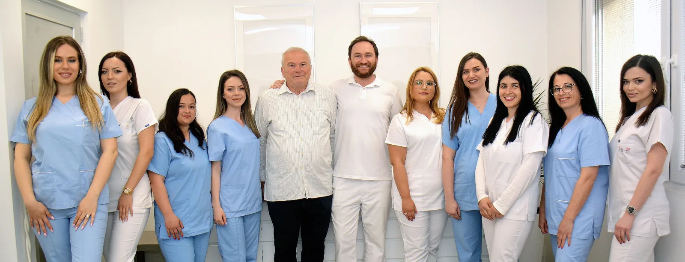
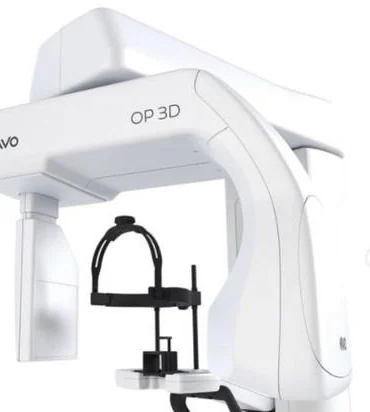
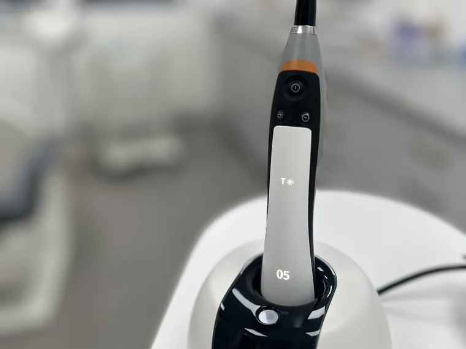

Семејна стоматолошка ординација од 1993
Триесет и три години грижа за вашата насмевка.
Протетика, импланти, естетска стоматологија и ласерска терапија во центарот на Битола — со дигитално панорамско снимање и најстроги протоколи за стерилизација.
- 33Години искуство
- 4,9Оценка на Google
- 33Стоматолошки услуги
★★★★★ 4,9 на Google од 31 рецензија
Закажете преглед
Прегледот трае 30 минути. Изберете ден и час, оставете име и телефон — ние ќе ви се јавиме за да го потврдиме терминот.
- 30 минути, понеделник – петок
- Потребни се само име и телефон
- Зборуваме англиски, грчки и германски
Основана од д-р Кирил Нечаковски. Номинирана за TOP-100 Achievements 2020 Award на Achievements Forum, Велика Британија, во категоријата здравствени установи.
Што правиме
Целосна стоматолошка грижа на едно место.
Изберете категорија, или закажете преглед и заедно ќе одлучиме што ви треба.
Нема услуги во оваа категорија.
Кој ве чека
Докторите и тимот.

-
Основач Д-р Кирил Нечаковски Специјалист по стоматолошка протетика
Роден 1948 во Цапари. Дипломирал на Стоматолошкиот факултет во Скопје во 1974, специјализирал протетика во 1986. До 1993 работи во Медицинскиот центар „Д-р Трифун Пановски“ во Битола, а во 1993 ја основа оваа ординација, во која работи до пензионирањето во 2021 година.
-
Доктор Д-р Александар Нечаковски Специјалист по стоматолошка протетика
Роден 1977 во Битола, дипломирал во Скопје во 2002 и специјализирал протетика 2008–2011. Член на Европската асоцијација за естетска стоматологија (ESCD) од 2017. Сертифициран за имплантните системи Impla Schütz Dental, Straumann и BioHorizons. Во 2020–2021 посетува практична обука во Вашингтон, САД.
-
Доктор Д-р Ева Анастасова Доктор на стоматологија
Родена 1990 во Битола, дипломирала во Скопје во 2014. Волонтира во Итната стоматолошка служба во Битола од 2014, а во ординацијата работи од 2016. Обучена за хијалуронски филери од брендовите Cytosial и Apriline.
-
Доктор Д-р Христина Стојческа Доктор на дентална медицина
Родена 1995 во Битола. Дипломирала на Стоматолошкиот факултет при Универзитетот „Гоце Делчев“ во Штип во 2020. Две години работи како стажант во ординации по општа стоматологија, ортодонција и орална хирургија. Член на тимот од 2023.
-
Доктор Д-р Елена Вртковска Доктор на дентална медицина
Родена 1992 во Прилеп, дипломирала во Скопје во 2019. Работи како стажант во Универзитетскиот стоматолошки клинички центар „Св. Пантелејмон“ во Скопје. Член на тимот од 2023.
Целиот тим редовно посетува стручни предавања, обуки и симпозиуми — Македонско стоматолошко друштво, Македонско имплантолошко здружение и ESCD.
Опрема и безбедност
Ништо не е препуштено на случајност.
Хигиената, дезинфекцијата и стерилизацијата на инструментите и опремата се подеднакво важни за здравјето на пациентите и на тимот.
- KaVo OP 3D панорамско снимање Во употреба од 23.09.2021. Има програми за сите ситуации, вклучително снимање кај деца со најниска доза и ограничено поле.
- MELAG автоклав од B-класа Ги исполнува најстрогите критериуми за стерилизација и директивите EN 0630 и EN 867-5.
- Три ласери Два тераписки ласери (904 nm и 658 nm) и Sirona Sirolaser Blue за ласерска хирургија и LABR.
- Материјали за еднократна употреба За секој пациент — ракавици, маски, чашки, аспиратори, шприцови и игли. Површините се дезинфицираат редовно, а инструментите поединечно се пакуваат пред стерилизација.


Што велат пациентите
4,9 од 5 на Google.
★★★★★
Прочитајте ги рецензиите на Google
Оценка 4,9 од 31 рецензија на Google, октомври 2026.
Каде сме
Во центарот на Битола.
Поранешна ул. „Иван Милутиновиќ“. Веднаш до стоковната куќа „Јавор“, во преминот кон градскиот пазар, во близина на „Црвен крст“.
Насоки на Google MapsРаботно време
Распоред по доктор
Распоредот се менува по седмици. Проверете при закажувањето кој доктор ве очекува.
- Д-р Александар Нечаковски
- 1. и 3. седмица 12:00–19:00 · 2. и 4. седмица 09:00–16:00
- Д-р Ева Анастасова
- 1. и 3. седмица 09:00–16:00 · 2. и 4. седмица 12:00–19:00
- Д-р Христина Стојческа
- 1. и 3. седмица 09:00–16:00 · 2. и 4. седмица 12:00–19:00
- Д-р Елена Вртковска
- 1. и 3. седмица 16:00–20:00 · 2. и 4. седмица 08:00–12:00
За итни случаи, можна е услуга во секое време.
Телефон
- 075 306 509 за закажување
- 047 254 528
- 070 312 264
- Viber · 070 395 362
Преглед од 30 минути, кога вам ви одговара.
Оставете име и телефон — ќе ви се јавиме за да го потврдиме терминот.